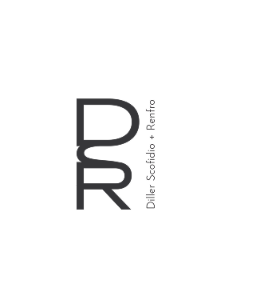

ABOUT DSR
Founded in 1981, Diller Scofidio + Renfro (DS+R) is a design studio whose practice spans the fields of architecture, urban design, installation art, multi-media performance, digital media, and print. With a focus on cultural and civic projects, DS+R’s work addresses the changing role of institutions and the future of cities. The studio is based in New York and is comprised of over 100 architects, designers, artists and researchers, led by four partners—Elizabeth Diller, Ricardo Scofidio, Charles Renfro and Benjamin Gilmartin. DS+R's cross genre work has been distinguished with TIME’s "100 Most Influential People" list and the first grant awarded in the field of architecture from the MacArthur Foundation, which identified Diller and Scofidio as, “architects who have created an alternative form of architectural practice that unites design, performance, and electronic media with cultural and architectural theory and criticism. Their work explores how space functions in our culture and illustrates that architecture, when understood as the physical manifestation of social relationships, is everywhere, not just in buildings.”
Read More
EXPERIENCE
THE NEW YORK TIMES
The Radical Architect Who Made the City Disappear by Robert Hammond
03/22/2025
AIA NEW YORK
In Memoriam: Ricardo Scofidio, AIA (1935-2025)
03/20/2025
MOMA
Remembering Ricardo Scofidio (1935-2025) by Glenn D. Lowry and Martino Sterli
03/19/2025
BLOOMBERG
Remembering Ricardo Scofidio, Quiet Architect of New York’s Edgiest Work by Kriston Capps
03/09/2025
DS+R
Ricardo Scofidio (1935-2025)
03/05/2025
Read More
CONTACT
Diller Scofidio + Renfro
Follow this link for employment opportunities
+1 212.260.7971 / disco@dsrny.com
New York
London
Prospective Clients
Press and Speaking Engagements
Materials Resource Librarian
601 West 26th Street, Suite 1680, New York, NY 10001
75 Cowcross St, London EC1M 6EL, UK
bd@dsrny.com
press@dsrny.com
materials@dsrny.com

ABOUT
PROJECTS
SERVICES
NEWS
CONTACT
2025 DS+R. All rights reserved